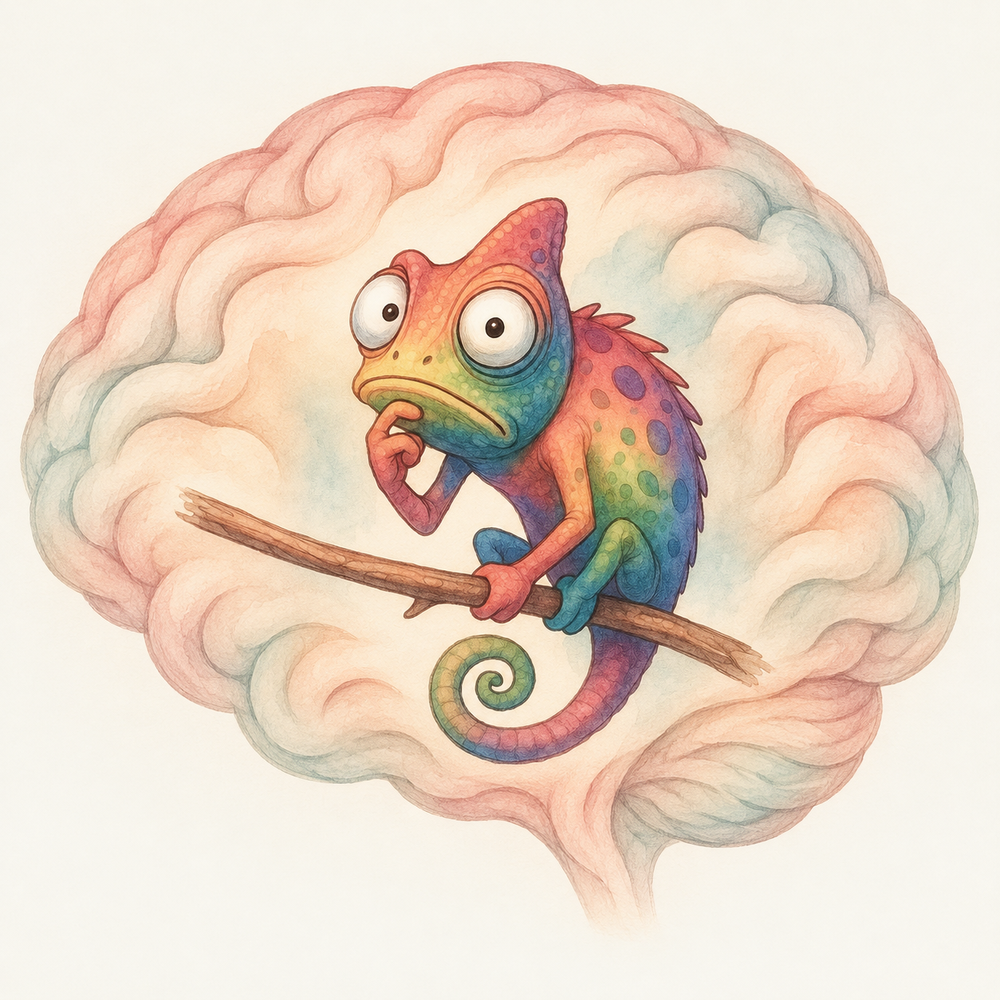

Question projection
Hear or read each phrase and judge whether someone is asking a question or starting to ask one.
Try question projectionA contextual evaluation of synthetic speech with listener anticipation and speech continuation

Try the tasks
Receive one randomly selected assignment. Your responses stay in your browser, and you can download your own results.
Hear or read each phrase and judge whether someone is asking a question or starting to ask one.
Try question projectionHear each phrase and choose which of two written sentences it sounds more likely to be part of.
Try turn projectionFind the source recording and speaker channel for each numbered phrase in Table 1 of the paper.
Experimental design
The assignment tables for the two question-act projection collections and the turn-completion study.
27 phrases 42 assignment lists
Scroll sideways within the table to see all conditions. The numbers inside the matrix are list identifiers.
27 phrases 42 assignment lists
This collection used a different assignment matrix. Scroll sideways within the table to see all conditions.
18 phrases 27 assignment lists
Cont. phrases appear first, followed by End phrases. Two list numbers in an End cell mean that the same recording was assigned to both lists.
Real is the original recording. Text is the text-only condition. OV = OmniVoice; F5 = F5-TTS; CS2 = CosyVoice2; Q3 = Qwen3-TTS Base.
Early, Late, and Full indicate how much of the phrase was presented. The question-act tables separate synthesis with a period, a question mark, or no punctuation.
S is the shared phrase; C is its continuation. S+C indicates that both were supplied for synthesis. Listeners heard only the selected portion of S.